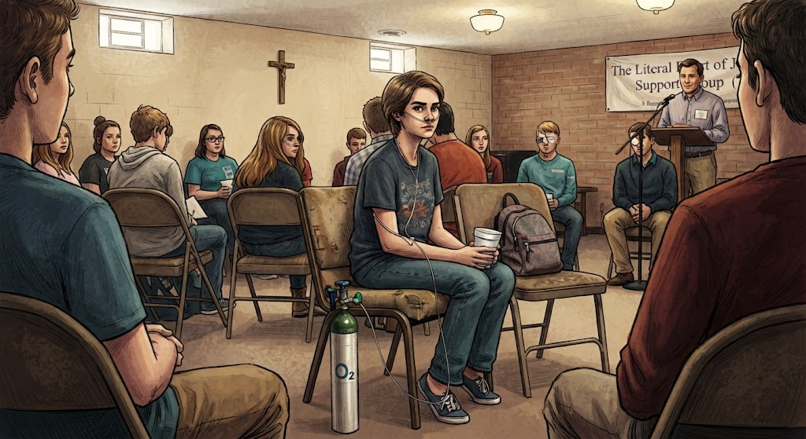

Once Upon a Page
Once Upon a Page

Support Group

In the winter of Hazel Grace Lancaster’s seventeenth year, her mother asks her to go to a cancer support group because she believes Hazel is depressed about her cancer diagnosis. Hazel explains that depression is not a side effect of cancer, but a side effect of dying. Hazel explains that she has been staying in the house, spending a lot of time in bed, reading the same book, titled, An Imperial Affliction, and spending her free time thinking about death.
Hazel explains that the support group meets every Wednesday in the basement of an Episcopal church shaped like a cross. The group meets in a room where the two boards of the cross would meet. The leader of the group, Patrick, mentions that the group meets in the heart of Jesus, and how the young people, as cancer survivors, hold a special place in Jesus’ heart.
During the support, they sit in the “Circle of trust,” and listen to Patrick tell his life story for the thousandth time, about the way his cancer had taken his testicles. Hazel speaks sarcastically about how Patrick tells the group he is grateful, although he has lost his wife, is addicted to videogames, is mostly friendless, and waiting for the “sword of Damocles” to fall down and end his life. After Patrick tells his story, the group goes around and introduces themselves: Name, age, and diagnosis. Then the group opens up for discussion. The only redeeming element of support group was a kid named Isaac. Isaac has lost an eye to cancer, and he has a glass eye in the place where the other eye had been removed. Isaac and hazel connect during the support group, communicating through sighs and sarcasm as they listen to the others share.
After going to the support group for a few weeks, Hazel comes to dread going. One Wednesday during a twelve-hour America’s Next Top Model marathon, Hazel attempts to get out of going to group. She argues with her mom. Mrs. Lancaster explains that she wants Hazel to make friends and be a normal teenager. Eventually, she agrees to go, not because she wants to, but because it makes her parents happy.
The young cancer survivors go around in a circle sharing about how they are doing. Isaac shares that he must go in for surgery and get his one remaining eye removed. He shares that his girlfriend, Monica, and his friend, Augustus are helping him through it. Other kids share around the circle until it gets to Augustus. He shares his full name is Augustus Waters, that he is seventeen, and had a “touch of osteosarcoma”, but is there to support Isaac.
The group continues with the attendees sharing their battles and victories. Hazel equates this part of group to a circle jerk of support. Eventually, Patrick asks Augustus what his fears are. Augustus reveals that he is afraid of oblivion. Hazel, who shares she is not typically one to speak up, responds by telling Augustus that everyone will die, that “there was a time before consciousness and there will be a time after.” She suggests Augustus ignore it like everyone else. She shares that she had learned this from Peter Van Houten, the author of An Imperial Affliction, who is the only person she’s ever heard of who a) understands what it’s like to be dying and b) hasn't died.
At the end of the meeting, Patrick closes with a prayer in which he prays for all of the group’s attendees. At the end of the prayer he mentions the names of the group members who have died. Hazel keeps her eyes closed, thinking about the day her name will be added to the list of those who have died. At the end, Patrick recites the group’s mantra “Living our best life today.”
After the mantra, Augustus approaches Hazel and asks what her name is. Isaac arrives and tells them about his trip to the doctor earlier that day. He told the doctor he would rather be deaf than blind, but the doctor told him his cancer didn't work that way. Isaac snidely tells them he thanked his doctor for telling him his eye cancer wouldn't make him deaf. Hazel facetiously says the doctor sounds like a winner, and tells Isaac that she is going to get some eye cancer so she can make the doctors acquaintance.
After Isaac leaves to go meet his girlfriend Monica in the parking lot, Augustus turns to Hazel and says that they are “literally in the heart of Jesus”. Hazel jokes that it must be dangerous for Jesus to have cancer kids in his heart. Augustus stares at Hazel for a moment, shaking his head. When she asks what he is looking at, he says she is beautiful, and he likes looking at beautiful things. Augustus tells Hazel she looks like Natalie Portman in V for Vendetta. Hazel tells him she has never seen the movie. As they walk out, Augustus invites her to his house to watch it. She notices he is limping because his cancer took his leg, but he is confident nonetheless.
In the parking lot outside, Hazel is surprised that her mother is not there yet. She sees Isaac aggressively kissing Monica against the wall and pawing at her breast. In between kissing, they say “always” to one another, which Augustus explains is there way of saying they will always love one another. Hazel wonders if his hand on her breast feels good, and forgives Isaac for the public display on account of his going blind. Hazel and Augustus joke about them, Augustus stating that it is difficult to tell whether he is trying to arouse her or complete a breast exam.
Just then, Augustus pulls out a cigarette and places it in his mouth. Hazel is taken aback by the cigarette and angrily accuses Augustus of ruining his chances with her. She says that there is always a hamartia (a fatal flaw), and of course Augustus’ has to be one that gives money to companies that profit through giving people cancer. She tells Augustus that not being able to breathe sucks, and she begins walking away angrily. Just as she begins to walk away, she feels Augustus’ hand grab hers. Augustus says that cigarettes can only kill you if you light them, and he has never lit one. He explains that the cigarettes are a metaphor: you put the thing between your teeth, but you don't give it the power to kill you. After explaining himself, Hazel agrees to go with him to his house.